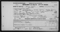

Blickensderfer and related families - Family Card
Blickensderfer and related families - Family Card
John Peter MARTIN(27 Aug 1821 - 2 Sep 1886)John HOENSCHURZ
Katherine C. DINKEL(2 Aug 1822 - 6 Apr 1894)Irma KNERE
m. 4 Jun 1873, Chicago, Cook County, IL



b. Mar 1851, Bingham on the Rhine, Germany
d. 16 Feb 1909, Chicago, Cook County, IL
bur. Chicago, Cook County, Illinois
b. 16 Nov 1849, Racine, WI
d. 31 Oct 1922, Chicago, Cook County, IL
bur.
Children
> Frank William MARTIN(17 Dec 1873 - 5 Mar 1963)
John MARTIN(1875 - )
Charles MARTIN(Dec 1877 - )
Frederick MARTIN(May 1879 - )
Ida MARTIN(Feb 1880 - )
Harriet MARTIN(May 1889 - )
Joseph MARTIN(12 Feb 1894 - 14 Jan 1965)